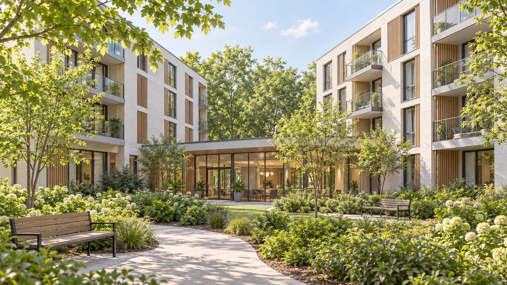
1 / 6안뜰 정원을 사이에 둔 두 동의 건물이에요.
편안한 하루를 내 뜻대로
아침에는 창가에서 책을 읽고, 저녁에는 정원을 거닐어요. 내 소식을 어느 가족에게 어디까지 알릴지도 직접 정하실 수 있어요.
이웃과 함께 드시는 하루 세 끼
아침, 점심, 저녁을 1층 식당에서 차려 드려요. 아래는 상차림 예시예요.
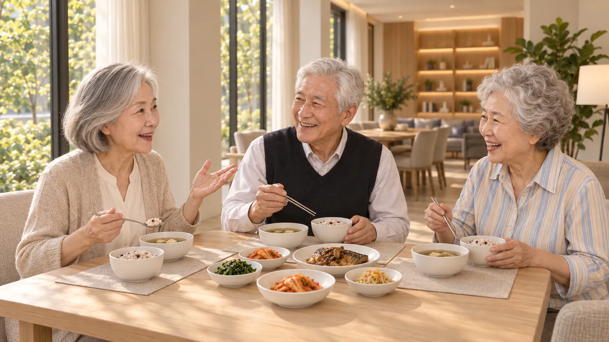
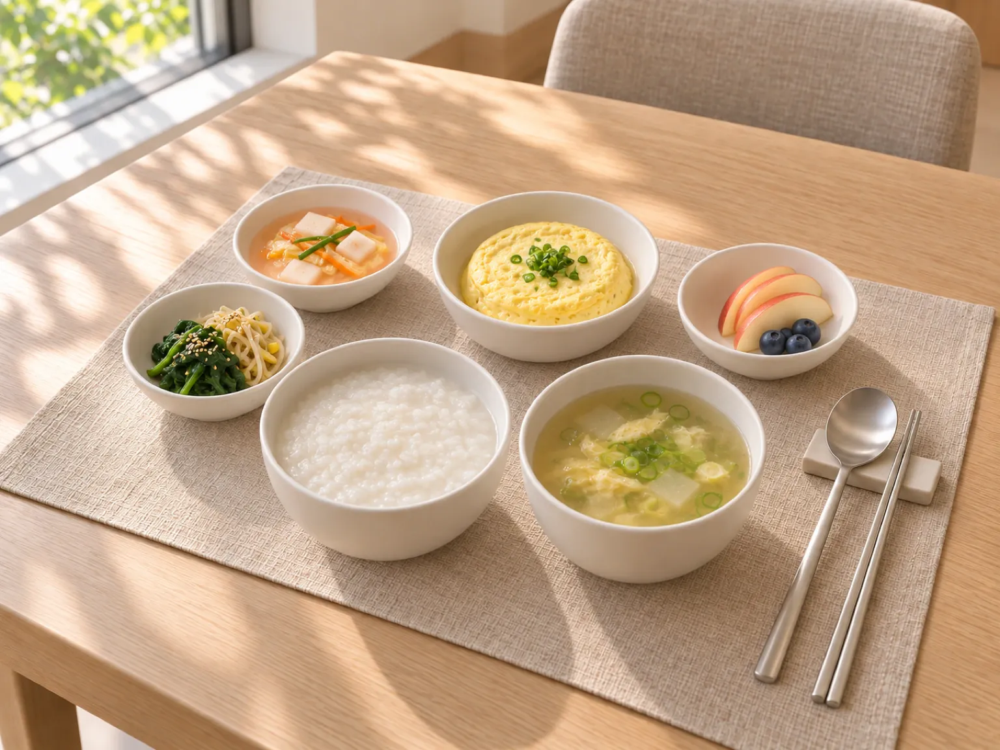
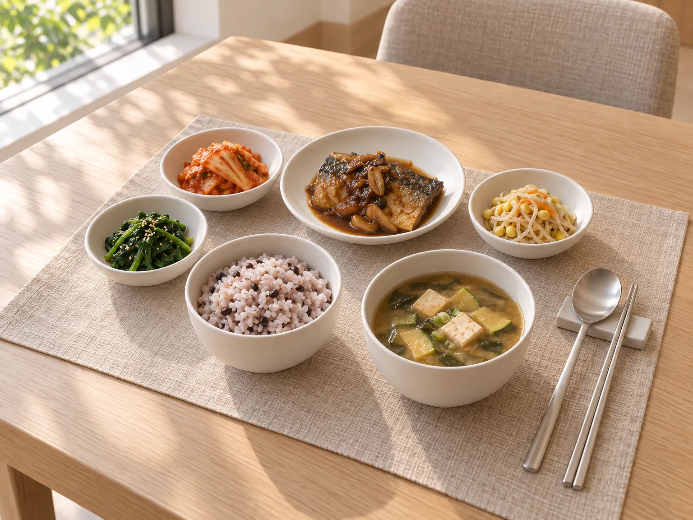
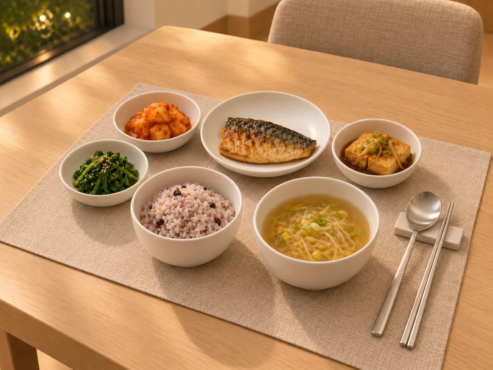
식사를 거르실 날은 프런트에 미리 말씀해 주세요. 그 끼니 값은 청구서에서 빼고 왜 빠졌는지도 적어 드려요.
식사 자세히 보기마음 가는 모임만 골라서 함께해요
레지던스에서 수채화, 가벼운 체조, 텃밭 가꾸기 같은 모임을 열어요. 가고 싶으신 것만 신청하시면 돼요.
수채화. 물감으로 꽃과 풍경을 그려요.AI로 만든 가상 사진 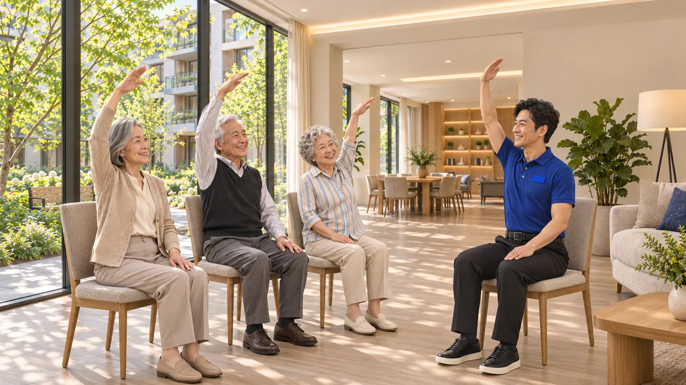
가벼운 체조. 의자에 앉거나 서서 몸을 풀어요.AI로 만든 가상 사진 텃밭 가꾸기. 안뜰 텃밭에서 채소를 심고 돌봐요.AI로 만든 가상 사진
신청은 Evenstay 홈 앱에서 요일과 남은 자리를 보고 하시면 돼요. 프런트에 전화하셔도 똑같이 신청돼요.
여가 프로그램 자세히 보기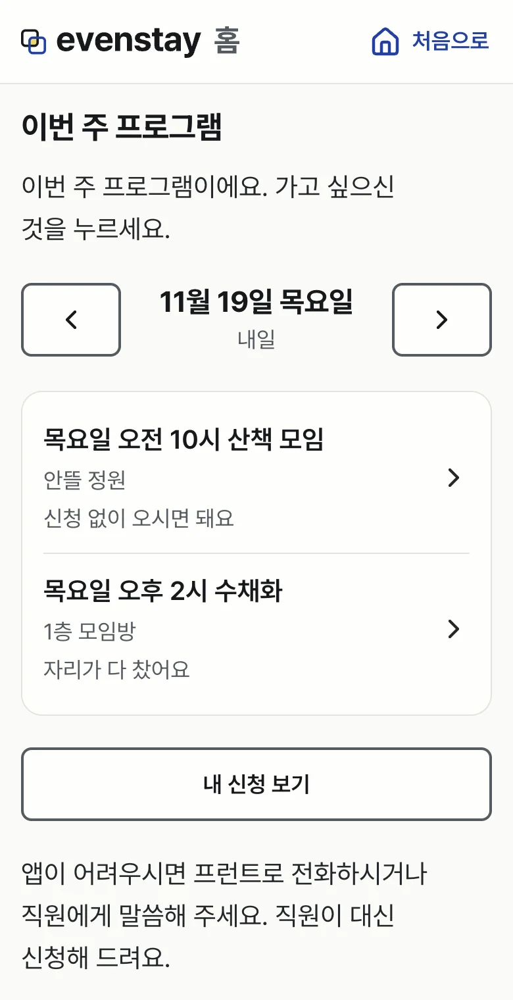
Evenstay가 지키는 세 가지
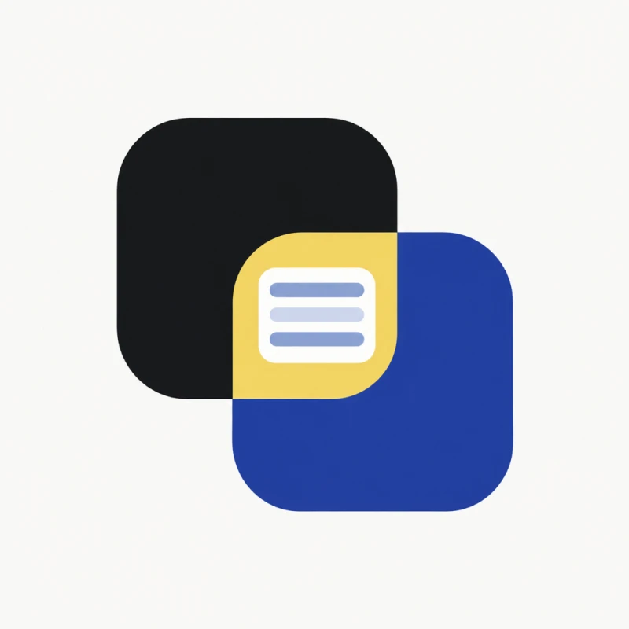
내 소식은 내가 정해요
어떤 소식을 누구에게 보여 줄지 가족마다 따로 정하세요. 마음이 바뀌면 언제든 바꾸실 수 있어요.
가족은 허락하신 소식만 봐요
허락하신 소식은 직원이 확인한 기록 그대로 보여요. 회원님이 보시는 내용과 똑같아요.
중요한 일은 사람이 정해요
앱과 비서는 소식을 알리고 말을 전할 뿐이에요. 어떻게 할지는 직원이 회원님과 이야기해서 정해요.
로비와 라운지에서 얼굴을 마주하는 직원
회원님이 쓰시는 앱, Evenstay 홈
휴대폰이나 태블릿으로 쓰세요. 글자가 크고, 한 화면에 한 가지 일만 나와요.
왜 이 금액인지 적혀 있는 청구서
항목마다 왜 이 금액인지 적혀 있어요. 거르신 식사처럼 빼 드린 금액도 이유와 함께 보여요.
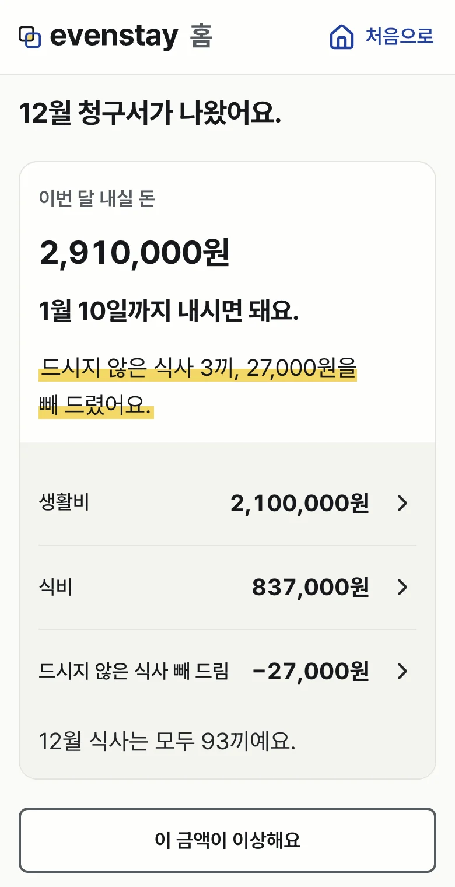
생활 요청
고장 난 곳이나 필요한 일을 알려 주시면 담당 직원에게 전해 드려요.
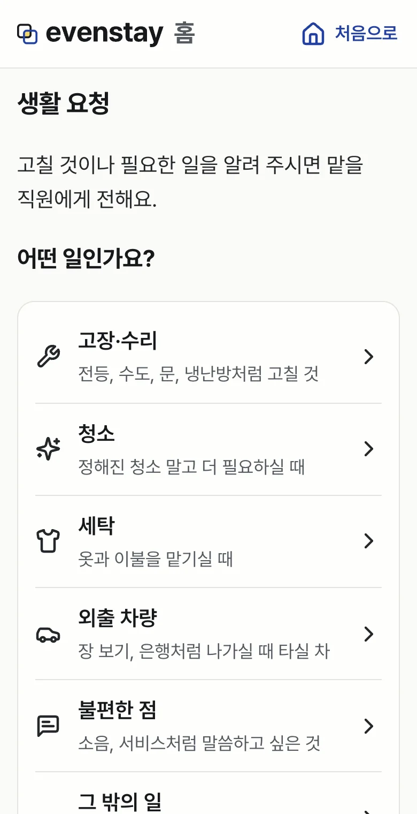
홈 비서
계약 날짜와 청구서 내용을 물어보시면 답해요. 그 밖의 일은 직원에게 전해 드려요.
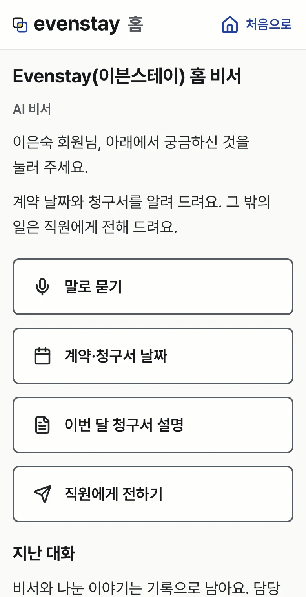
가족이 쓰는 앱, Evenstay 패밀리
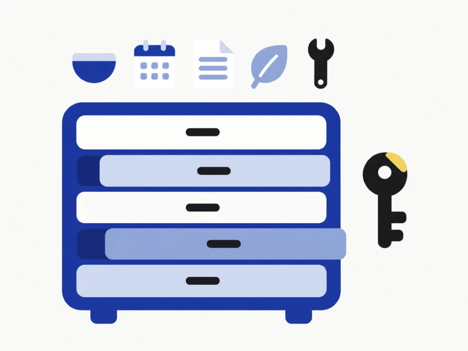
생활 소식, 일정, 청구서, 건강 소식, 생활 요청 가운데 회원님이 허락하신 것만 가족에게 보여요.
일정에는 계약과 청구서 날짜, 신청하신 프로그램이 나와요. 자리를 기다리시는 프로그램과 시설 예약은 나오지 않아요.
가족마다 항목을 따로 정하세요. 바꾸시면 바로 적용돼요. 누가 언제 무엇을 봤는지도 회원님 앱에 나와요.
생활 요청을 허락받은 가족은 고장 수리나 청소를 회원님 대신 요청하실 수도 있어요.
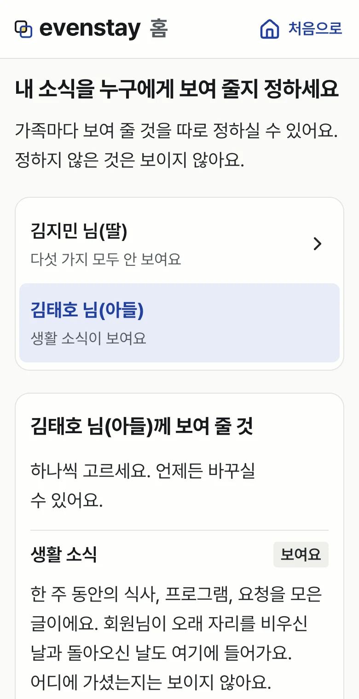
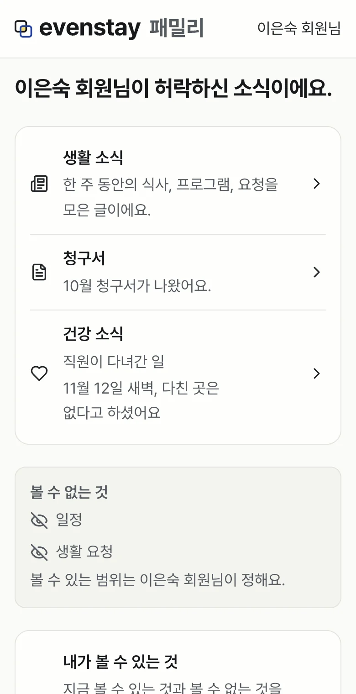
회원님이 정하신 항목만 가족 화면에 나와요.
도움이 더 필요해지면, 무엇이 달라지는지 먼저 알려 드려요
직원이 먼저 회원님께 설명드리고 말씀을 들어요. 생활 지원 단계는 직원이 기록을 남긴 뒤 센터장이 정해요.
앱을 열면 바뀌지 않는 것(지금 계신 방, 입주 계약, 급할 때 연락할 분)이 맨 위에 보이고, 새로 받으시는 도움이 그 아래에 보여요.
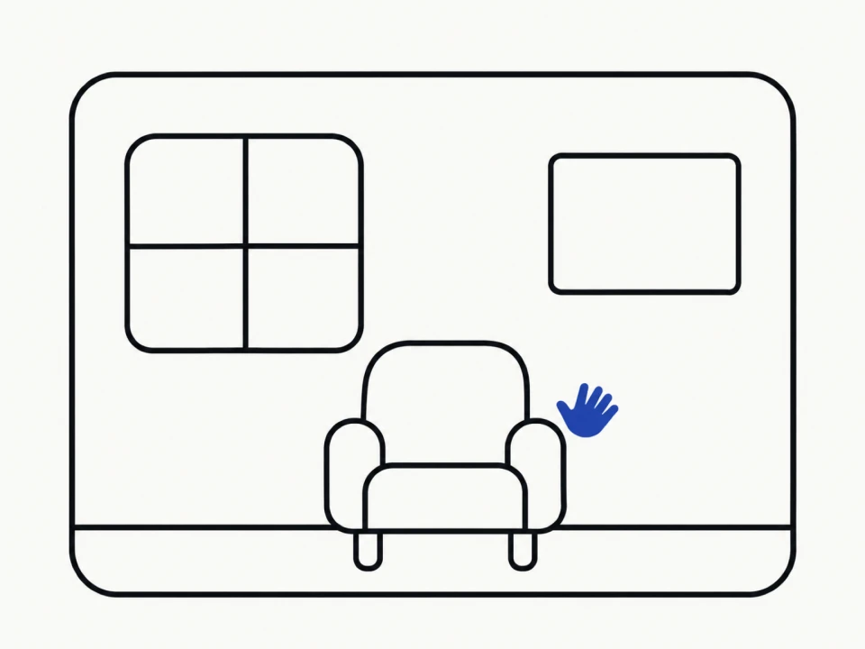
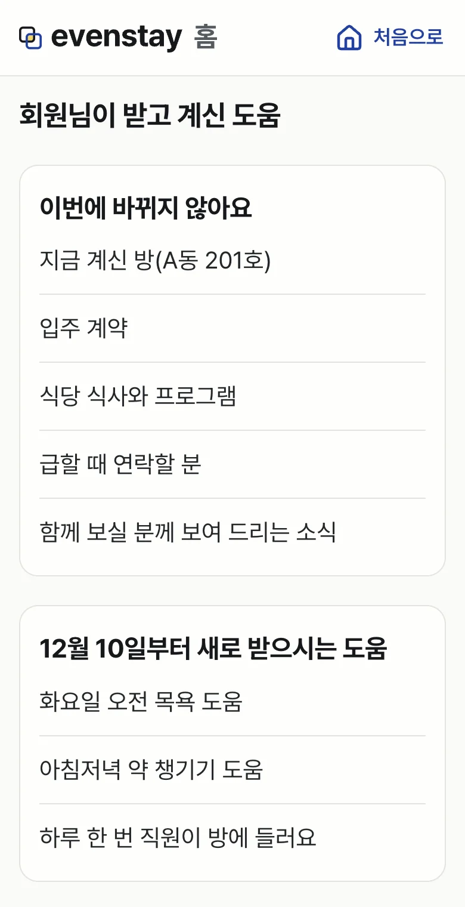
도움이 필요하실 때
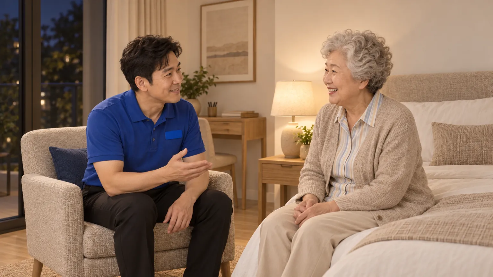
부르세요. 호출벨을 누르시면 당번 직원에게 바로 알려요. 침대 센서가 알릴 때도 마찬가지예요.
직원이 찾아가요. 당번 직원이 바로 받지 못하면 다른 직원에게도 알려요.
기록이 남아요. 직원이 한 일을 기록해요. 건강 소식을 허락하신 가족은 Evenstay 패밀리에서 봐요.
급하시면 119에 바로 전화하셔도 돼요.
안심·건강 지원 자세히 보기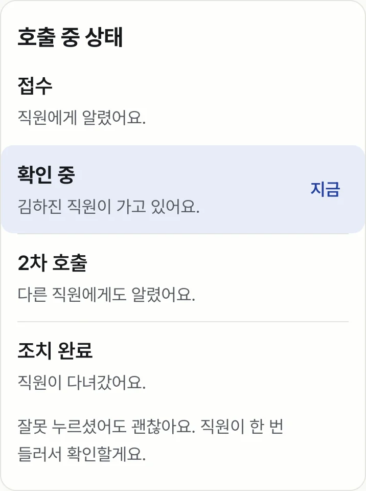

앱이 어려우시면 이렇게 하세요
방마다 호출벨이 있어요. 누르시면 당번 직원에게 알려요.
방 전화로 프런트(내선 0번)에 걸어 주세요. 부탁하신 일은 직원이 대신 요청해 드려요.
가까이 있는 직원에게 말씀하셔도 돼요. 앱 설정은 프런트 직원이 곁에서 도와 드려요.

앱이 혼자 정하지 않아요
홈 비서
홈 비서는 계약서와 청구서에 적힌 내용만 답해요. 건강, 돈, 계약처럼 결정이 필요한 일은 회원님께 여쭌 뒤 직원에게 전해요.
안심 알림
안심 알림은 호출벨과 센서 신호를 직원에게 전하고 기록을 남겨요. 가서 살피고 어떻게 할지는 직원이 정해요.
생활 지원 단계
생활 지원 단계도 앱이 정하지 않아요. 직원이 회원님 말씀을 듣고 기록한 뒤 센터장이 정해요.
입주 상담 신청
성함과 연락처를 남겨 주시면 상담 직원이 연락드려요. 숙소, 비용, 입주 절차를 상담 때 안내해 드려요.
이 사이트는 포트폴리오로 만든 데모예요. 신청 내용은 보내지 않고 저장하지도 않아요.
전화로 하시려면
포트폴리오를 보러 오신 분께
Evenstay는 실제로 운영하지 않는 가상의 시니어 레지던스입니다. 이 사이트와 앱 화면은 시니어 레지던스 운영 시스템을 기획하고 프로토타입으로 만든 결과입니다. 위에서 보신 회원 앱과 가족 앱, 직원 화면을 프로토타입의 화면 모음에서 이어서 보실 수 있습니다.
코어
여러 레지던스의 계약과 청구를 같은 기준으로 처리합니다.
안심 알림
호출벨과 센서 신호를 한곳에 모아 직원에게 전하고 대응 과정을 기록합니다.
보호자 포털·동의
입주자가 가족마다 보여 줄 항목을 정합니다. 누가 무엇을 봤는지는 모두 기록합니다.
AI 생활 비서
계약 날짜와 청구 내용만 답합니다. 판단이 필요한 일은 직원에게 넘깁니다.
생활 지원 단계
건강이 달라진 입주자의 지원 단계를 사람이 기록해 정합니다. 바뀌는 것과 바뀌지 않는 것을 입주자에게 먼저 보여 줍니다.
생활 요청
수리, 청소, 세탁, 외출 차량, 병원 동행, 의견을 한 목록으로 받아 담당을 정합니다. 입주자 확인까지 기록합니다.
프로그램·시설·공지
여가 프로그램 신청과 대기, 출석, 공용 시설 예약, 공지 확인을 한곳에서 관리합니다.
소유주는 자기 사업장의 월 리포트와 위탁 운영 계약 이력을 볼 수 있습니다.
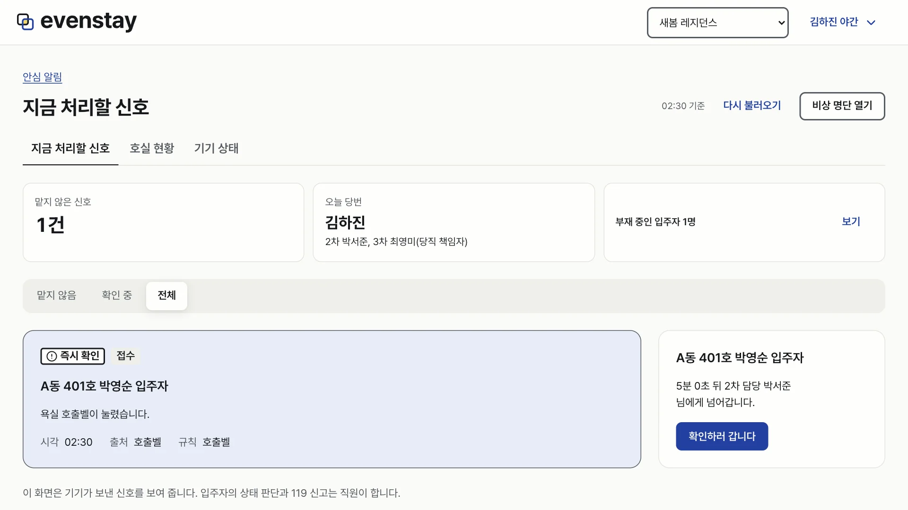
새 창에서 열립니다. 링크는 면접 때 공유합니다.